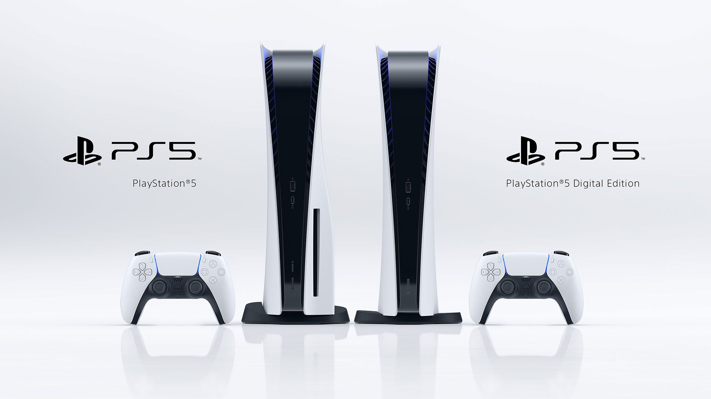

.png)
PLAYSTATION 5
IMPORTANTE: fique atento à data de publicação desta matéria, pois todos os preços e promoções estão sujeitos à disponibilidade de estoque e duração da oferta. Alterações de preço podem ocorrer a qualquer momento, sem aviso do varejista. O preço ou valor total do produto poderá ser alterado de acordo com a localidade, considerando frete e possíveis impostos interestaduais. Os produtos exibidos aqui foram selecionados pela nossa equipe de ofertas. Logo, se você comprar algo, o Canaltech pode receber alguma comissão de venda.
Após uma nova redução dos impostos sobre consoles e acessórios de videogame no Brasil, a Sony confirmou que iria reduzir o preço do PlayStation 5 no varejo local. Agora, o modelo Digital — sem entrada para disco — está disponível na Fast Shop pelo melhor preço do varejo brasileiro.
Os estoques do PlayStation 5 continuam esgotar rapidamente. Por isso, é bom ser rápido caso você tenha interesse em entrar na nova geração e curtir novos jogos exclusivos — como Demon's Souls e Ratchet & Clank: Rift Apart — além de poder aproveitar a biblioteca do PlayStation 4 através da retrocompatibilidade.
O PlayStation 5 traz muitas mudanças na forma de jogar, começando pelo armazenamento SSD. Enquanto consoles como o PlayStation 4 e o Xbox One usam um disco rígido para guardar e carregar os jogos, o PlayStation 5 traz um SSD de altíssima velocidade. Desenvolvido especialmente para esse console, ele atinge velocidades maiores até do que as melhores peças disponíveis no mercado. Com ele, telas de carregamento e esperas para inicializar o jogo viraram coisa do passado.
Em relação aos gráficos, o PlayStation 5 tem suporte para jogos com resolução 4K rodando em até 120 quadros por segundo. Isso significa não só que o visual ficará mais bonito, mas também garante uma jogatina mais suave. Além disso, ele tem saída para vídeo em 8K, dando uma garantia de que vai funcionar corretamente mesmo nas TVs mais avançadas de altíssima resolução, que ainda devem demorar alguns anos para se tornarem mais comuns no mercado.
Mas claro que o grande destaque do PlayStation 5 fica por conta dos jogos exclusivos, que você só encontra na plataforma da Sony. Títulos como Ratchet & Clank e Demon's Souls foram muito elogiados pela crítica e podem ser jogados apenas no PlayStation 5. Além disso, ele é compatível com todos os jogos de PlayStation 4, permitindo que você tenha acesso aos sucessos da geração passada que ainda não aproveitou.